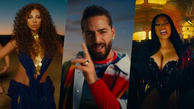

El 1 de abril de 2022 se lanzó la primera canción oficial del mundial llamado «Hayya Hayya (Better Together)» interpretado por el cantante estadounidense Trinidad Cardona con la participación del ícono del afrobeats Davido y AISHA. La segunda canción del mundial se llama "Arhbo", interpretado por Gims y Ozuna. Se presentó el 19 de agosto de 2022. La tercera canción oficial es "Light The Sky", interpretado por Nora Fatehi, Manal, Rahma Riad y Balqees. Compuesto por RedOne, se presentó el 7 de octubre de 2022. La cuarta canción se llama "Tukoh Taka", interpretada por Maluma, Nicki Minaj y Myriam Fares. Se estrenó el 17 de noviembre de 2022 junto con el video musical y también servirá como la canción oficial del FIFA Fan Festival.
|  |